CODING AGENTS AS PIXEL WORLD MODELS
traex/GPT-6.1-Sol · common50_0000
点击播放 · 原生 RGB 像素
逐轮保存的候选
回放视频、检查图与代码变化。
每份候选均可单独播放。实际图片检查记录在下方工具轨迹中。
候选 01播放与检查图
点击播放 · 原生 RGB 像素
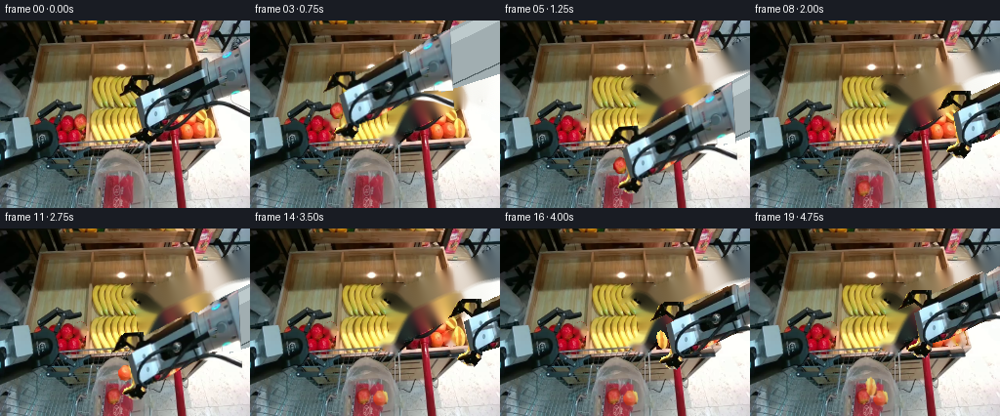
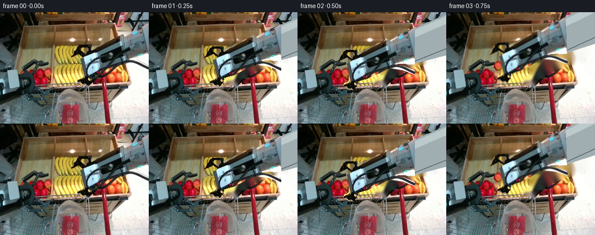
展开代码变化
--- 上一保存版本
+++ 本次保存版本
@@ -0,0 +1,70 @@
+from pathlib import Path
+import numpy as np
+from PIL import Image, ImageDraw, ImageFilter
+import cv2
+from artifact_io import save
+
+ROOT=Path(__file__).resolve().parent
+SRC=np.asarray(Image.open(ROOT/'first_frame.png').convert('RGB'))
+H,W=192,256
+
+def poly_mask(points):
+ im=Image.new('L',(W,H));ImageDraw.Draw(im).polygon(points,fill=255)
+ return np.asarray(im).copy()
+
+body_poly=[(256,18),(231,29),(213,40),(208,38),(157,61),(156,57),(137,57),(131,61),(128,69),(123,76),(130,74),(139,69),(147,76),(139,80),(144,106),(141,111),(134,114),(132,118),(142,125),(149,126),(156,118),(157,111),(174,106),(205,91),(218,86),(226,80),(256,82)]
+mask=poly_mask(body_poly)
+# The flexible cable moves together with its tool assembly.
+cable=np.zeros((H,W),np.uint8)
+cv2.polylines(cable,[np.array([(256,96),(236,88),(217,85),(199,85),(178,92),(159,105),(146,115),(146,108),(151,94),(164,82),(181,76),(189,76)],np.int32)],False,255,5,cv2.LINE_AA)
+mask=np.maximum(mask,cable)
+BG=cv2.inpaint(SRC,cv2.dilate(mask,np.ones((3,3),np.uint8)),5,cv2.INPAINT_TELEA)
+
+FRUITS=[dict(center=(81,104),polygon=[(78,97),(82,95),(86,97),(89,102),(88,108),(85,112),(79,112),(75,107),(75,102)]),dict(center=(204,111),polygon=[(203,105),(208,105),(212,108),(212,114),(210,119),(205,121),(200,119),(198,115),(198,110)]),dict(center=(215,111),polygon=[(213,101),(216,103),(219,108),(221,115),(220,120),(217,122),(214,119),(211,116),(209,108),(210,103)])]
+for f in FRUITS:
+ f['mask']=poly_mask(f['polygon'])
+ f['patch']=cv2.inpaint(BG,cv2.dilate(f['mask'],np.ones((3,3),np.uint8)),3,cv2.INPAINT_TELEA)
+
+def overlay(dst,src,alpha):
+ a=alpha.astype(np.float32)[...,None]/255
+ return np.clip(dst*(1-a)+src*a,0,255).astype(np.uint8)
+
+def warp_layer(source,alpha,origin,target,angle=0):
+ mat=cv2.getRotationMatrix2D(origin,angle,1)
+ mat[:,2]+=np.array(target)-np.array(origin)
+ return cv2.warpAffine(source,mat,(W,H),flags=cv2.INTER_LINEAR),cv2.warpAffine(alpha,mat,(W,H),flags=cv2.INTER_LINEAR)
+
+def fruit_layer(dst,f,target,angle=0,opacity=1):
+ rgb,a=warp_layer(SRC,f['mask'],f['center'],target,angle)
+ return overlay(dst,rgb,(a*opacity).astype(np.uint8))
+
+def arm_layer(dst,target,angle=0):
+ # Rigid steel extension leading to the robot outside the field of view.
+ origin=(135,96)
+ mat=cv2.getRotationMatrix2D(origin,angle,1);mat[:,2]+=np.array(target)-origin
+ def pt(p):return tuple((mat@np.array([*p,1])).tolist())
+ ext=Image.new('RGBA',(W,H));d=ImageDraw.Draw(ext)
+ d.polygon([pt(p) for p in [(244,24),(400,-44),(400,42),(244,83)]],fill=(161,174,177,255))
+ d.polygon([pt(p) for p in [(245,27),(400,-42),(400,-28),(246,39)]],fill=(189,202,204,255))
+ d.line([pt((249,78)),pt((400,18))],fill=(88,102,105,255),width=2)
+ dst=overlay(dst,np.asarray(ext)[...,:3],np.asarray(ext)[...,3])
+ rgb,a=warp_layer(SRC,mask,origin,target,angle)
+ return overlay(dst,rgb,a)
+
+# Key poses: approach, grip, lift, carry, release, and return for each item.
+# The camera, left gripper, tray and cart stay fixed.
+poses=[((135,96),0,None,False),((107,98),0,None,False),((81,104),0,0,True),((88,92),3,0,True),((115,126),4,0,True),((122,148),4,0,True),((122,136),2,None,False),((168,112),0,None,False),((204,111),0,1,True),((199,97),-3,1,True),((161,117),-2,1,True),((127,146),3,1,True),((135,131),0,None,False),((188,111),0,None,False),((215,111),0,2,True),((207,96),-3,2,True),((166,114),0,2,True),((124,144),4,2,True),((132,130),2,None,False),((164,102),0,None,False)]
+frames=[]
+for i,(target,angle,held,closed) in enumerate(poses):
+ if i==0:frames.append(SRC.copy());continue
+ im=BG.copy()
+ for j,f in enumerate(FRUITS):
+ if i>=[2,8,14][j]:im=overlay(im,f['patch'],f['mask'])
+ # Bag contents remain in the same bottom location after release.
+ for j,start in enumerate([6,12,18]):
+ if i>=start:im=fruit_layer(im,FRUITS[j],[(115,171),(132,172),(124,162)][j],[-15,10,-8][j],0.73)
+ if held is not None:im=fruit_layer(im,FRUITS[held],target,angle)
+ im=arm_layer(im,target,angle)
+ frames.append(im)
+frames=np.stack(frames)
+save(frames,ROOT)
候选 02播放与检查图
点击播放 · 原生 RGB 像素
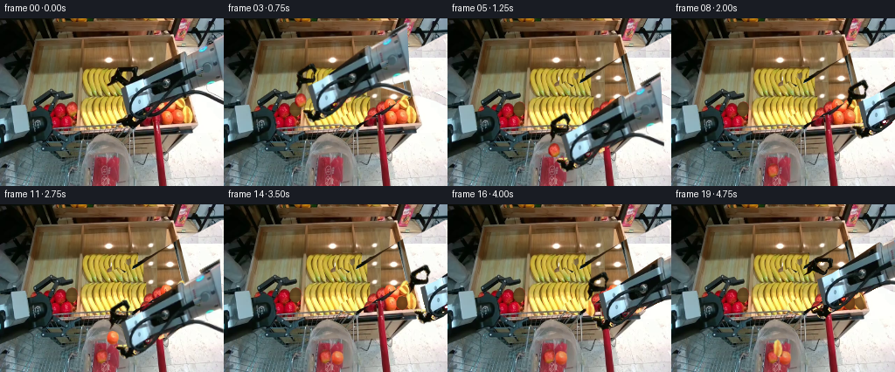
展开代码变化
--- 上一保存版本
+++ 本次保存版本
@@ -1,6 +1,6 @@
from pathlib import Path
import numpy as np
-from PIL import Image, ImageDraw, ImageFilter
+from PIL import Image, ImageDraw
import cv2
from artifact_io import save
@@ -8,63 +8,133 @@
SRC=np.asarray(Image.open(ROOT/'first_frame.png').convert('RGB'))
H,W=192,256
-def poly_mask(points):
- im=Image.new('L',(W,H));ImageDraw.Draw(im).polygon(points,fill=255)
- return np.asarray(im).copy()
+def polygon(points):
+ im=Image.new('L',(W*4,H*4));ImageDraw.Draw(im).polygon([(round(x*4),round(y*4)) for x,y in points],fill=255)
+ return np.array(im.resize((W,H),Image.Resampling.LANCZOS))
-body_poly=[(256,18),(231,29),(213,40),(208,38),(157,61),(156,57),(137,57),(131,61),(128,69),(123,76),(130,74),(139,69),(147,76),(139,80),(144,106),(141,111),(134,114),(132,118),(142,125),(149,126),(156,118),(157,111),(174,106),(205,91),(218,86),(226,80),(256,82)]
-mask=poly_mask(body_poly)
-# The flexible cable moves together with its tool assembly.
+def composite(dst,src,alpha):
+ a=np.asarray(alpha,dtype=float)[...,None]/255
+ return np.clip(dst*(1-a)+src*a,0,255).astype(np.uint8)
+
+# Independent rigid pieces, with articulated fingers rather than a deforming arm.
+body=polygon([(139,81),(156,74),(208,39),(210,38),(214,40),(230,32),(256,18),(256,80),(225,87),(218,86),(205,92),(176,106),(156,115),(147,112),(144,105)])
+upper=polygon([(122.8,76.5),(127.5,72.5),(128,67),(132.5,63),(133.5,59),(137,56.6),(155.5,56.5),(157,58.5),(156.3,66.5),(151,69.5),(149.5,74),(147,76.5),(141,74),(133.5,70.5),(130,74)])
+upper=upper*(1-polygon([(139.5,62.5),(151,62),(150.5,69),(146.8,71),(140,66)])/255)
+lower=polygon([(132.7,115.9),(140,111.4),(144,109.5),(147,110),(150,113),(155,113),(157,115.8),(154,119.5),(150.5,122),(149,125.3),(146,126.3),(141,124.5),(138.5,121.5),(132.2,119)])
+lower=lower*(1-polygon([(145,112.5),(148.4,114.3),(146.4,118),(142.4,116.6)])/255)
cable=np.zeros((H,W),np.uint8)
-cv2.polylines(cable,[np.array([(256,96),(236,88),(217,85),(199,85),(178,92),(159,105),(146,115),(146,108),(151,94),(164,82),(181,76),(189,76)],np.int32)],False,255,5,cv2.LINE_AA)
-mask=np.maximum(mask,cable)
-BG=cv2.inpaint(SRC,cv2.dilate(mask,np.ones((3,3),np.uint8)),5,cv2.INPAINT_TELEA)
+cv2.polylines(cable,[np.array([(257,97),(244,91),(232,87),(222,84.8),(211,85),(199,87),(187,94),(175,103),(163,112),(154,116),(147,115),(145.8,110),(147,102),(151,94),(157,87),(165,82),(176,78),(187,76)],np.int32)],False,255,4,cv2.LINE_AA)
+# Exclude visible yellow and red scene pixels from the copied robot.
+bad=(SRC[...,0].astype(float)>SRC[...,2]+30.)&(SRC[...,0]>105)&(SRC[...,2]<90)
+for a in [body,upper,lower,cable]:a[bad]=0
+mask=np.maximum.reduce([body,upper,lower,cable]).astype(np.uint8)
-FRUITS=[dict(center=(81,104),polygon=[(78,97),(82,95),(86,97),(89,102),(88,108),(85,112),(79,112),(75,107),(75,102)]),dict(center=(204,111),polygon=[(203,105),(208,105),(212,108),(212,114),(210,119),(205,121),(200,119),(198,115),(198,110)]),dict(center=(215,111),polygon=[(213,101),(216,103),(219,108),(221,115),(220,120),(217,122),(214,119),(211,116),(209,108),(210,103)])]
-for f in FRUITS:
- f['mask']=poly_mask(f['polygon'])
- f['patch']=cv2.inpaint(BG,cv2.dilate(f['mask'],np.ones((3,3),np.uint8)),3,cv2.INPAINT_TELEA)
+FRUITS=[dict(center=(81,104),polygon=[(78,97),(82,95.5),(86,97),(88.5,102),(88,108),(84,112),(79,111.5),(75.5,107),(75.5,101.5)]),dict(center=(204,112),polygon=[(200,106),(204,104.8),(208,106),(210.3,109),(210.5,114),(208.5,119),(204.5,121),(200.5,119.5),(197.5,116),(197.5,111)]),dict(center=(215,111),polygon=[(213.3,101),(216,103),(219,108),(221,115),(220,120),(217,121),(214,119),(211,116),(209.5,108),(210.4,103)])]
+for f in FRUITS:f['mask']=polygon(f['polygon'])
-def overlay(dst,src,alpha):
- a=alpha.astype(np.float32)[...,None]/255
- return np.clip(dst*(1-a)+src*a,0,255).astype(np.uint8)
+def warp(source,alpha,mat):
+ a=np.asarray(alpha,dtype=np.float32)/255
+ rgb=cv2.warpAffine(source.astype(np.float32)*a[...,None],mat,(W,H),flags=cv2.INTER_LINEAR)
+ a=cv2.warpAffine(a,mat,(W,H),flags=cv2.INTER_LINEAR)
+ return rgb,a
-def warp_layer(source,alpha,origin,target,angle=0):
- mat=cv2.getRotationMatrix2D(origin,angle,1)
- mat[:,2]+=np.array(target)-np.array(origin)
- return cv2.warpAffine(source,mat,(W,H),flags=cv2.INTER_LINEAR),cv2.warpAffine(alpha,mat,(W,H),flags=cv2.INTER_LINEAR)
+def transform(origin,target,angle):
+ mat=cv2.getRotationMatrix2D(origin,angle,1)
+ mat[:,2]+=np.array(target)-np.array(origin)
+ return mat
+
+def transformed(dst,source,alpha,mat,opacity=1):
+ rgb,a=warp(source,alpha,mat)
+ return np.clip(dst*(1-a[...,None]*opacity)+rgb*opacity,0,255).astype(np.uint8)
def fruit_layer(dst,f,target,angle=0,opacity=1):
- rgb,a=warp_layer(SRC,f['mask'],f['center'],target,angle)
- return overlay(dst,rgb,(a*opacity).astype(np.uint8))
+ return transformed(dst,SRC,f['mask'],transform(f['center'],target,angle),opacity)
-def arm_layer(dst,target,angle=0):
- # Rigid steel extension leading to the robot outside the field of view.
- origin=(135,96)
- mat=cv2.getRotationMatrix2D(origin,angle,1);mat[:,2]+=np.array(target)-origin
- def pt(p):return tuple((mat@np.array([*p,1])).tolist())
- ext=Image.new('RGBA',(W,H));d=ImageDraw.Draw(ext)
- d.polygon([pt(p) for p in [(244,24),(400,-44),(400,42),(244,83)]],fill=(161,174,177,255))
- d.polygon([pt(p) for p in [(245,27),(400,-42),(400,-28),(246,39)]],fill=(189,202,204,255))
- d.line([pt((249,78)),pt((400,18))],fill=(88,102,105,255),width=2)
- dst=overlay(dst,np.asarray(ext)[...,:3],np.asarray(ext)[...,3])
- rgb,a=warp_layer(SRC,mask,origin,target,angle)
- return overlay(dst,rgb,a)
+# Complete the covered tray from visible wood, fruit and floor pixels in frame zero.
+# Reconstruction is only used where the original robot was occluding the scene.
+reconstructed=SRC.copy()
+yy,xx=np.mgrid[:H,:W].astype(np.float32)
+floor=cv2.remap(SRC,228+np.mod(xx-200,27),127+np.mod(yy-45,62),cv2.INTER_LINEAR)
+reconstructed=composite(reconstructed,floor,polygon([(191,18),(256,18),(256,139),(222,139),(202,66)]))
+wood=cv2.remap(SRC,110+np.mod(xx-110,70),31+np.mod(yy-31,21),cv2.INTER_LINEAR)
+reconstructed=composite(reconstructed,wood,polygon([(91,24),(194,24),(215,119),(91,122)]))
+# Visible wooden side rail, copied with a projective mapping.
+rail=cv2.warpPerspective(SRC,cv2.getPerspectiveTransform(np.float32([(33,35),(43,34),(31,118),(21,119)]),np.float32([(193,22),(200,22),(225,122),(217,121)])),(W,H))
+reconstructed=composite(reconstructed,rail,polygon([(193,22),(200,22),(225,122),(217,121)]))
+# Continue the upper and lower rows of bananas with unchanged photographed texture.
+for x0,x1,y0,y1,dx in [(128,149,56,91,30),(147,164,56,91,47),(131,150,89,123,33),(150,167,89,123,51)]:
+ clone=cv2.remap(SRC,xx-dx,yy,cv2.INTER_LINEAR)
+ reconstructed=composite(reconstructed,clone,polygon([(x0,y0),(x1,y0),(x1,y1),(x0,y1)]))
+# Duplicate neighboring red and orange fruit to complete the obscured back row.
+apple=FRUITS[0]
+for c in [(170,110),(176,117),(166,119),(180,103)]:
+ reconstructed=fruit_layer(reconstructed,apple,c,0)
+for c in [(191,108),(185,117),(190,99),(203,100)]:
+ reconstructed=fruit_layer(reconstructed,FRUITS[1],c,0)
+reconstructed=fruit_layer(reconstructed,FRUITS[2],(206,97),-30)
+# Front lip and cart structure visible behind the open jaws.
+front=cv2.remap(SRC,xx-35,yy,cv2.INTER_LINEAR)
+reconstructed=composite(reconstructed,front,polygon([(126,122),(174,122),(174,130),(126,130)]))
+BG=composite(SRC,reconstructed,cv2.dilate(mask,np.ones((3,3),np.uint8)))
+# Reinstate the stationary red cart handle where the cable originally hid it.
+handle=cv2.remap(SRC,xx,yy+15,cv2.INTER_LINEAR)
+BG=composite(BG,handle,polygon([(174,111),(180,110),(181,127),(176,129)]))
-# Key poses: approach, grip, lift, carry, release, and return for each item.
-# The camera, left gripper, tray and cart stay fixed.
-poses=[((135,96),0,None,False),((107,98),0,None,False),((81,104),0,0,True),((88,92),3,0,True),((115,126),4,0,True),((122,148),4,0,True),((122,136),2,None,False),((168,112),0,None,False),((204,111),0,1,True),((199,97),-3,1,True),((161,117),-2,1,True),((127,146),3,1,True),((135,131),0,None,False),((188,111),0,None,False),((215,111),0,2,True),((207,96),-3,2,True),((166,114),0,2,True),((124,144),4,2,True),((132,130),2,None,False),((164,102),0,None,False)]
+# The former fruit footprint reveals the tray, with a soft contact shadow.
+for f in FRUITS:
+ hole=np.zeros_like(SRC,dtype=np.float32)
+ if f is FRUITS[0]:
+ hole[:]=[112,82,39]
+ elif f is FRUITS[1]:hole[:]=[126,75,30]
+ else:hole[:]=[145,100,49]
+ grain=cv2.remap(SRC,88+0*xx,40+np.mod(yy,15),cv2.INTER_LINEAR).astype(float)
+ hole+=0.22*(grain-grain.mean(axis=(0,1)))
+ # Curved shading makes the vacant place sit between the surrounding fruit.
+ cx,cy=f['center'];r=np.sqrt(((xx-cx)/8)**2+((yy-cy)/10)**2)
+ hole*=np.clip(1-.25*r,.65,1)[...,None]
+ f['patch']=np.uint8(np.clip(hole,0,255))
+
+# Cylindrical continuation of the arm to the right edge. Its radial color and
+# metal texture are sampled from the photographed grey wrist, not a new model.
+axis=np.array([.898,-.440]);normal=np.array([.440,.898]);anchor=np.array([244.,46.])
+delta=np.stack([xx-anchor[0],yy-anchor[1]],axis=-1)
+s=delta@axis;r=delta@normal
+extension_alpha=((s>=-2)&(s<210)&(abs(r)<24)).astype(np.uint8)*255
+sx=239+normal[0]*r+axis[0]*(-4+2*np.sin(s/8))
+sy=48+normal[1]*r+axis[1]*(-4+2*np.sin(s/8))
+extension_rgb=cv2.remap(SRC,sx.astype(np.float32),sy.astype(np.float32),cv2.INTER_LINEAR,borderMode=cv2.BORDER_REPLICATE)
+
+def arm_layer(dst,target,angle,closure):
+ m=transform((129,97),target,angle)
+ dst=transformed(dst,extension_rgb,extension_alpha,m)
+ # Finger joints have genuine revolute articulation, all surfaces remain rigid.
+ mu=cv2.getRotationMatrix2D((147,76),29*closure,1)
+ ml=cv2.getRotationMatrix2D((150,112),-31*closure,1)
+ def chain(a,b):return (np.vstack([a,[0,0,1]])@np.vstack([b,[0,0,1]]))[:2]
+ dst=transformed(dst,SRC,upper,chain(m,mu))
+ dst=transformed(dst,SRC,lower,chain(m,ml))
+ dst=transformed(dst,SRC,body,m)
+ dst=transformed(dst,SRC,cable,m)
+ return dst
+
+# Three single-item pick-and-place cycles, with release inside the bag opening.
+# Fixed scale and only small rigid rotations preserve the steel assembly shape.
+poses=[((129,97),0,None,0),((103,101),0,None,.15),((81,104),0,0,1),((87,94),3,0,1),((109,126),3,0,1),((121,151),3,0,1),((121,136),2,None,.15),((166,114),0,None,.05),((204,112),0,1,1),((197,97),-3,1,1),((161,119),-2,1,1),((129,152),3,1,1),((136,132),0,None,.15),((189,114),0,None,0),((215,111),0,2,1),((207,97),-3,2,1),((163,119),0,2,1),((124,151),3,2,1),((128,132),2,None,.15),((157,102),0,None,0)]
frames=[]
-for i,(target,angle,held,closed) in enumerate(poses):
- if i==0:frames.append(SRC.copy());continue
- im=BG.copy()
- for j,f in enumerate(FRUITS):
- if i>=[2,8,14][j]:im=overlay(im,f['patch'],f['mask'])
- # Bag contents remain in the same bottom location after release.
- for j,start in enumerate([6,12,18]):
- if i>=start:im=fruit_layer(im,FRUITS[j],[(115,171),(132,172),(124,162)][j],[-15,10,-8][j],0.73)
- if held is not None:im=fruit_layer(im,FRUITS[held],target,angle)
- im=arm_layer(im,target,angle)
- frames.append(im)
+for i,(target,angle,held,closure) in enumerate(poses):
+ if i==0:frames.append(SRC.copy());continue
+ im=BG.copy()
+ for j,f in enumerate(FRUITS):
+ if i>=[2,8,14][j]:im=composite(im,f['patch'],f['mask'])
+ # Contents drop to the bag bottom after the fingers open, and stay there.
+ for j,release in enumerate([6,12,18]):
+ if i>=release:
+ end=[(115,174),(130,175),(122,165)][j]
+ if i==release:end=(end[0],end[1]-5)
+ im=fruit_layer(im,FRUITS[j],end,[-15,10,-8][j],.83)
+ if held is not None:im=fruit_layer(im,FRUITS[held],target,angle)
+ im=arm_layer(im,target,angle,closure)
+ frames.append(im)
frames=np.stack(frames)
save(frames,ROOT)
+Image.fromarray(BG).save(ROOT/'.tmp/background.png')
候选 03播放与检查图
点击播放 · 原生 RGB 像素

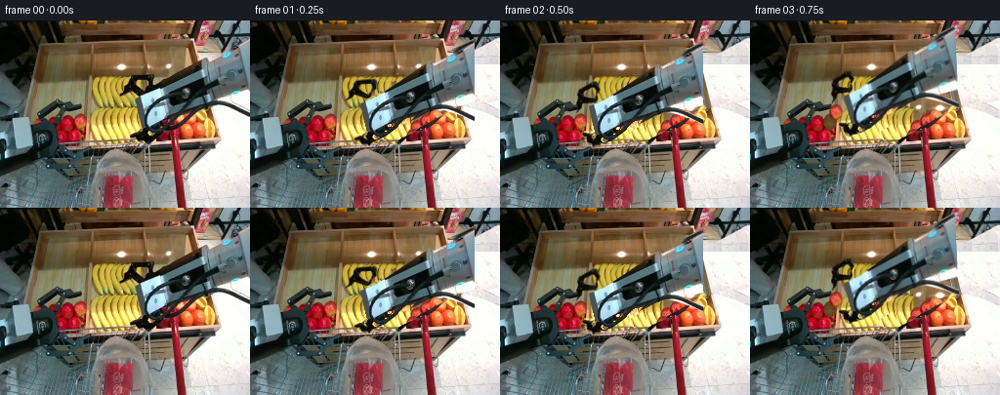
展开代码变化
--- 上一保存版本
+++ 本次保存版本
@@ -17,13 +17,13 @@
return np.clip(dst*(1-a)+src*a,0,255).astype(np.uint8)
# Independent rigid pieces, with articulated fingers rather than a deforming arm.
-body=polygon([(139,81),(156,74),(208,39),(210,38),(214,40),(230,32),(256,18),(256,80),(225,87),(218,86),(205,92),(176,106),(156,115),(147,112),(144,105)])
+body=polygon([(139,80),(156,69),(208,38),(210,38),(214,40),(230,32),(256,18),(256,80),(225,87),(218,86),(205,92),(176,106),(156,115),(147,112),(144,105)])
upper=polygon([(122.8,76.5),(127.5,72.5),(128,67),(132.5,63),(133.5,59),(137,56.6),(155.5,56.5),(157,58.5),(156.3,66.5),(151,69.5),(149.5,74),(147,76.5),(141,74),(133.5,70.5),(130,74)])
upper=upper*(1-polygon([(139.5,62.5),(151,62),(150.5,69),(146.8,71),(140,66)])/255)
lower=polygon([(132.7,115.9),(140,111.4),(144,109.5),(147,110),(150,113),(155,113),(157,115.8),(154,119.5),(150.5,122),(149,125.3),(146,126.3),(141,124.5),(138.5,121.5),(132.2,119)])
lower=lower*(1-polygon([(145,112.5),(148.4,114.3),(146.4,118),(142.4,116.6)])/255)
cable=np.zeros((H,W),np.uint8)
-cv2.polylines(cable,[np.array([(257,97),(244,91),(232,87),(222,84.8),(211,85),(199,87),(187,94),(175,103),(163,112),(154,116),(147,115),(145.8,110),(147,102),(151,94),(157,87),(165,82),(176,78),(187,76)],np.int32)],False,255,4,cv2.LINE_AA)
+cv2.polylines(cable,[np.array([(258,97),(246,92),(235,87),(224,84),(217,83),(208,84),(196,88),(185,96),(173,106),(164,114),(156,121),(148,124),(144,116),(145,105),(150,94),(157,87),(166,82),(178,77),(188,75)],np.int32)],False,255,4,cv2.LINE_AA)
# Exclude visible yellow and red scene pixels from the copied robot.
bad=(SRC[...,0].astype(float)>SRC[...,2]+30.)&(SRC[...,0]>105)&(SRC[...,2]<90)
for a in [body,upper,lower,cable]:a[bad]=0
@@ -100,8 +100,8 @@
delta=np.stack([xx-anchor[0],yy-anchor[1]],axis=-1)
s=delta@axis;r=delta@normal
extension_alpha=((s>=-2)&(s<210)&(abs(r)<24)).astype(np.uint8)*255
-sx=239+normal[0]*r+axis[0]*(-4+2*np.sin(s/8))
-sy=48+normal[1]*r+axis[1]*(-4+2*np.sin(s/8))
+sx=249+normal[0]*r+axis[0]*(-4+2*np.sin(s/8))
+sy=54+normal[1]*r+axis[1]*(-4+2*np.sin(s/8))
extension_rgb=cv2.remap(SRC,sx.astype(np.float32),sy.astype(np.float32),cv2.INTER_LINEAR,borderMode=cv2.BORDER_REPLICATE)
def arm_layer(dst,target,angle,closure):
候选 04播放与检查图
候选 05播放与检查图
点击播放 · 原生 RGB 像素

展开代码变化
--- 上一保存版本
+++ 本次保存版本
@@ -91,7 +91,12 @@
hole+=0.22*(grain-grain.mean(axis=(0,1)))
# Curved shading makes the vacant place sit between the surrounding fruit.
cx,cy=f['center'];r=np.sqrt(((xx-cx)/8)**2+((yy-cy)/10)**2)
- hole*=np.clip(1-.25*r,.65,1)[...,None]
+ hole*=np.clip(.98-.4*r,.4,1)[...,None]
+ noise=(np.sin(xx*2.7+yy*.4)+np.sin(yy*1.4))*2
+ hole+=noise[...,None]
+ # Side occlusion is dark and follows the surrounding fruit rather than
+ # looking like a flat brown copy of the removed fruit.
+ hole*=np.clip(1-.23*np.maximum(0,(cx-xx)/7),.65,1)[...,None]
f['patch']=np.uint8(np.clip(hole,0,255))
# Cylindrical continuation of the arm to the right edge. Its radial color and
@@ -106,7 +111,20 @@
def arm_layer(dst,target,angle,closure):
m=transform((129,97),target,angle)
- dst=transformed(dst,extension_rgb,extension_alpha,m)
+ # Extend the rigid housing beyond the source image without clipping its
+ # physical connection to the robot outside the fixed camera view.
+ inv=cv2.invertAffineTransform(m)
+ ux=inv[0,0]*xx+inv[0,1]*yy+inv[0,2]
+ uy=inv[1,0]*xx+inv[1,1]*yy+inv[1,2]
+ along=(ux-244)*axis[0]+(uy-46)*axis[1]
+ radial=(ux-244)*normal[0]+(uy-46)*normal[1]
+ ea=np.clip(24-abs(radial),0,1)*np.clip(along+2,0,1)*255
+ ex=249+normal[0]*radial+axis[0]*(-4+2*np.sin(along/8))
+ ey=54+normal[1]*radial+axis[1]*(-4+2*np.sin(along/8))
+ ergb=cv2.remap(SRC,ex.astype(np.float32),ey.astype(np.float32),cv2.INTER_LINEAR,borderMode=cv2.BORDER_REPLICATE)
+ # The sampled lower profile must not include the white floor below it.
+ ergb=np.clip(ergb.astype(float)*(1-.18*np.clip((radial-15)/9,0,1)[...,None]),0,255).astype(np.uint8)
+ dst=composite(dst,ergb,ea)
# Finger joints have genuine revolute articulation, all surfaces remain rigid.
mu=cv2.getRotationMatrix2D((147,76),29*closure,1)
ml=cv2.getRotationMatrix2D((150,112),-31*closure,1)
候选 06播放与检查图
点击播放 · 原生 RGB 像素
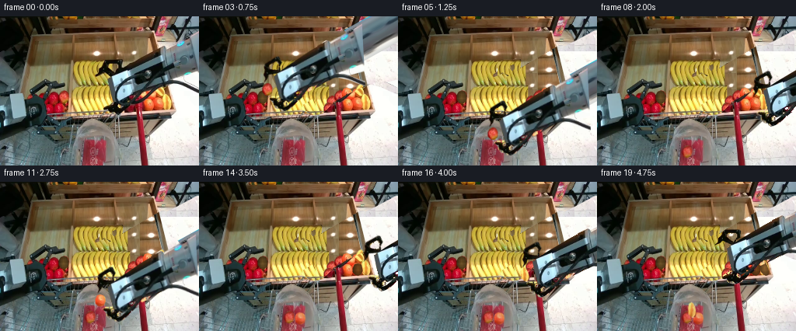
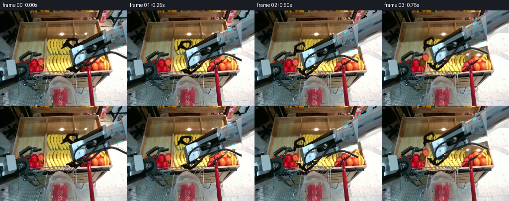
展开代码变化
--- 上一保存版本
+++ 本次保存版本
@@ -154,5 +154,12 @@
im=arm_layer(im,target,angle,closure)
frames.append(im)
frames=np.stack(frames)
+assert frames.shape == (20,192,256,3) and frames.dtype == np.uint8
+assert np.array_equal(frames[0],SRC)
save(frames,ROOT)
+# Optional conventional video preview; pixels.npz remains the RGB submission.
+writer=cv2.VideoWriter(str(ROOT/'video.mp4'),cv2.VideoWriter_fourcc(*'mp4v'),4,(256,192))
+if writer.isOpened():
+ for frame in frames:writer.write(cv2.cvtColor(frame,cv2.COLOR_RGB2BGR))
+writer.release()
Image.fromarray(BG).save(ROOT/'.tmp/background.png')
可观测工具轨迹
实际执行的命令与返回图片。
命令 1exit 0
/bin/bash -lc "ls -la && cat prompt.txt && printf '\\n---RULES---\\n' && cat GENERATION_RULES.md"
命令 2exit 0
/bin/bash -lc "cat task_spec.json && cat artifact_io.py && python - <<'PY'
from PIL import Image
im=Image.open('first_frame.png')
print(im.size)
im.resize((1024,768)).save('.tmp/enlarged.png')
PY"命令 3exit 0
/bin/bash -lc "python - <<'PY'
from PIL import Image,ImageDraw
im=Image.open('first_frame.png').resize((768,576));d=ImageDraw.Draw(im)
for x in range(0,256,16):
d.line((3*x,0,3*x,576),fill=(255,255,255,70));d.text((3*x+1,1),str(x),fill='red')
for y in range(0,192,16):
d.line((0,3*y,768,3*y),fill=(255,255,255,70));d.text((0,3*y),str(y),fill='red')
im.save('.tmp/grid.png')
PY"命令 4exit 0
/bin/bash -lc "python - <<'PY' import importlib.util for x in ['numpy','PIL','cv2','scipy']: print(x,bool(importlib.util.find_spec(x))) PY"
命令 5exit 0
/bin/bash -lc "python - <<'PY'
from PIL import Image
im=Image.open('first_frame.png')
im.crop((118,18,256,130)).resize((828,672)).save('.tmp/arm.png')
PY"命令 6exit 0
/bin/bash -lc "cat > generate.py <<'PY'
from pathlib import Path
import numpy as np
from PIL import Image, ImageDraw, ImageFilter
import cv2
from artifact_io import save
ROOT=Path(__file__).resolve().parent
SRC=np.asarray(Image.open(ROOT/'first_frame.png').convert('RGB'))
H,W=192,256
def poly_mask(points):
im=Image.new('L',(W,H));ImageDraw.Draw(im).polygon(points,fill=255)
return np.asarray(im).copy()
body_poly=[(256,18),(231,29),(213,40),(208,38),(157,61),(156,57),(137,57),(131,61),(128,69),(123,76),(130,74),(139,69),(147,76),(139,80),(144,106),(141,111),(134,114),(132,118),(142,125),(149,126),(156,118),(157,111),(174,106),(205,91),(218,86),(226,80),(256,82)]
mask=poly_mask(body_poly)
# The flexible cable moves together with its tool assembly.
cable=np.zeros((H,W),np.uint8)
cv2.polylines(cable,[np.array([(256,96),(236,88),(217,85),(199,85),(178,92),(159,105),(146,115),(146,108),(151,94),(164,82),(181,76),(189,76)],np.int32)],False,255,5,cv2.LINE_AA)
mask=np.maximum(mask,cable)
BG=cv2.inpaint(SRC,cv2.dilate(mask,np.ones((3,3),np.uint8)),5,cv2.INPAINT_TELEA)
FRUITS=[dict(center=(81,104),polygon=[(78,97),(82,95),(86,97),(89,102),(88,108),(85,112),(79,112),(75,107),(75,102)]),dict(center=(204,111),polygon=[(203,105),(208,105),(212,108),(212,114),(210,119),(205,121),(200,119),(198,115),(198,110)]),dict(center=(215,111),polygon=[(213,101),(216,103),(219,108),(221,115),(220,120),(217,122),(214,119),(211,116),(209,108),(210,103)])]
for f in FRUITS:
f['mask']=poly_mask(f['polygon'])
f['patch']=cv2.inpaint(BG,cv2.dilate(f['mask'],np.ones((3,3),np.uint8)),3,cv2.INPAINT_TELEA)
def overlay(dst,src,alpha):
a=alpha.astype(np.float32)[...,None]/255
return np.clip(dst*(1-a)+src*a,0,255).astype(np.uint8)
def warp_layer(source,alpha,origin,target,angle=0):
mat=cv2.getRotationMatrix2D(origin,angle,1)
mat[:,2]+=np.array(target)-np.array(origin)
return cv2.warpAffine(source,mat,(W,H),flags=cv2.INTER_LINEAR),cv2.warpAffine(alpha,mat,(W,H),flags=cv2.INTER_LINEAR)
def fruit_layer(dst,f,target,angle=0,opacity=1):
rgb,a=warp_layer(SRC,f['mask'],f['center'],target,angle)
return overlay(dst,rgb,(a*opacity).astype(np.uint8))
def arm_layer(dst,target,angle=0):
# Rigid steel extension leading to the robot outside the field of view.
origin=(135,96)
mat=cv2.getRotationMatrix2D(origin,angle,1);mat[:,2]+=np.array(target)-origin
def pt(p):return tuple((mat@np.array([*p,1])).tolist())
ext=Image.new('RGBA',(W,H));d=ImageDraw.Draw(ext)
d.polygon([pt(p) for p in [(244,24),(400,-44),(400,42),(244,83)]],fill=(161,174,177,255))
d.polygon([pt(p) for p in [(245,27),(400,-42),(400,-28),(246,39)]],fill=(189,202,204,255))
d.line([pt((249,78)),pt((400,18))],fill=(88,102,105,255),width=2)
dst=overlay(dst,np.asarray(ext)[...,:3],np.asarray(ext)[...,3])
rgb,a=warp_layer(SRC,mask,origin,target,angle)
return overlay(dst,rgb,a)
# Key poses: approach, grip, lift, carry, release, and return for each item.
# The camera, left gripper, tray and cart stay fixed.
poses=[((135,96),0,None,False),((107,98),0,None,False),((81,104),0,0,True),((88,92),3,0,True),((115,126),4,0,True),((122,148),4,0,True),((122,136),2,None,False),((168,112),0,None,False),((204,111),0,1,True),((199,97),-3,1,True),((161,117),-2,1,True),((127,146),3,1,True),((135,131),0,None,False),((188,111),0,None,False),((215,111),0,2,True),((207,96),-3,2,True),((166,114),0,2,True),((124,144),4,2,True),((132,130),2,None,False),((164,102),0,None,False)]
frames=[]
for i,(target,angle,held,closed) in enumerate(poses):
if i==0:frames.append(SRC.copy());continue
im=BG.copy()
for j,f in enumerate(FRUITS):
if i>=[2,8,14][j]:im=overlay(im,f['patch'],f['mask'])
# Bag contents remain in the same bottom location after release.
for j,start in enumerate([6,12,18]):
if i>=start:im=fruit_layer(im,FRUITS[j],[(115,171),(132,172),(124,162)][j],[-15,10,-8][j],0.73)
if held is not None:im=fruit_layer(im,FRUITS[held],target,angle)
im=arm_layer(im,target,angle)
frames.append(im)
frames=np.stack(frames)
save(frames,ROOT)
PY
python generate.py
cp inspection.png .tmp/candidate1.png"命令 7exit 0
/bin/bash -lc "python - <<'PY'
from PIL import Image
im=Image.open('frames/19.png');im.resize((1024,768)).save('.tmp/current19.png')
PY"命令 8exit 0
/bin/bash -lc "python - <<'PY'
from PIL import Image
im=Image.open('first_frame.png')
im.crop((120,45,256,132)).resize((1088,696)).save('.tmp/maskzoom.png')
PY"命令 9exit 0
/bin/bash -lc "python - <<'PY'
from PIL import Image
im=Image.open('first_frame.png');im.crop((163,93,225,125)).resize((930,480)).save('.tmp/fruits.png')
PY"命令 10exit 0
/bin/bash -lc "python - <<'PY'
from PIL import Image
im=Image.open('first_frame.png');im.crop((86,47,161,126)).resize((600,632)).save('.tmp/banana.png')
PY"命令 11exit 0
/bin/bash -lc "cp generate.py .tmp/generate_candidate1.py
cat > generate.py <<'PY'
from pathlib import Path
import numpy as np
from PIL import Image, ImageDraw
import cv2
from artifact_io import save
ROOT=Path(__file__).resolve().parent
SRC=np.asarray(Image.open(ROOT/'first_frame.png').convert('RGB'))
H,W=192,256
def polygon(points):
im=Image.new('L',(W*4,H*4));ImageDraw.Draw(im).polygon([(round(x*4),round(y*4)) for x,y in points],fill=255)
return np.array(im.resize((W,H),Image.Resampling.LANCZOS))
def composite(dst,src,alpha):
a=np.asarray(alpha,dtype=float)[...,None]/255
return np.clip(dst*(1-a)+src*a,0,255).astype(np.uint8)
# Independent rigid pieces, with articulated fingers rather than a deforming arm.
body=polygon([(139,81),(156,74),(208,39),(210,38),(214,40),(230,32),(256,18),(256,80),(225,87),(218,86),(205,92),(176,106),(156,115),(147,112),(144,105)])
upper=polygon([(122.8,76.5),(127.5,72.5),(128,67),(132.5,63),(133.5,59),(137,56.6),(155.5,56.5),(157,58.5),(156.3,66.5),(151,69.5),(149.5,74),(147,76.5),(141,74),(133.5,70.5),(130,74)])
upper=upper*(1-polygon([(139.5,62.5),(151,62),(150.5,69),(146.8,71),(140,66)])/255)
lower=polygon([(132.7,115.9),(140,111.4),(144,109.5),(147,110),(150,113),(155,113),(157,115.8),(154,119.5),(150.5,122),(149,125.3),(146,126.3),(141,124.5),(138.5,121.5),(132.2,119)])
lower=lower*(1-polygon([(145,112.5),(148.4,114.3),(146.4,118),(142.4,116.6)])/255)
cable=np.zeros((H,W),np.uint8)
cv2.polylines(cable,[np.array([(257,97),(244,91),(232,87),(222,84.8),(211,85),(199,87),(187,94),(175,103),(163,112),(154,116),(147,115),(145.8,110),(147,102),(151,94),(157,87),(165,82),(176,78),(187,76)],np.int32)],False,255,4,cv2.LINE_AA)
# Exclude visible yellow and red scene pixels from the copied robot.
bad=(SRC[...,0].astype(float)>SRC[...,2]+30.)&(SRC[...,0]>105)&(SRC[...,2]<90)
for a in [body,upper,lower,cable]:a[bad]=0
mask=np.maximum.reduce([body,upper,lower,cable]).astype(np.uint8)
FRUITS=[dict(center=(81,104),polygon=[(78,97),(82,95.5),(86,97),(88.5,102),(88,108),(84,112),(79,111.5),(75.5,107),(75.5,101.5)]),dict(center=(204,112),polygon=[(200,106),(204,104.8),(208,106),(210.3,109),(210.5,114),(208.5,119),(204.5,121),(200.5,119.5),(197.5,116),(197.5,111)]),dict(center=(215,111),polygon=[(213.3,101),(216,103),(219,108),(221,115),(220,120),(217,121),(214,119),(211,116),(209.5,108),(210.4,103)])]
for f in FRUITS:f['mask']=polygon(f['polygon'])
def warp(source,alpha,mat):
a=np.asarray(alpha,dtype=np.float32)/255
rgb=cv2.warpAffine(source.astype(np.float32)*a[...,None],mat,(W,H),flags=cv2.INTER_LINEAR)
a=cv2.warpAffine(a,mat,(W,H),flags=cv2.INTER_LINEAR)
return rgb,a
def transform(origin,target,angle):
mat=cv2.getRotationMatrix2D(origin,angle,1)
mat[:,2]+=np.array(target)-np.array(origin)
return mat
def transformed(dst,source,alpha,mat,opacity=1):
rgb,a=warp(source,alpha,mat)
return np.clip(dst*(1-a[...,None]*opacity)+rgb*opacity,0,255).astype(np.uint8)
def fruit_layer(dst,f,target,angle=0,opacity=1):
return transformed(dst,SRC,f['mask'],transform(f['center'],target,angle),opacity)
# Complete the covered tray from visible wood, fruit and floor pixels in frame zero.
# Reconstruction is only used where the original robot was occluding the scene.
reconstructed=SRC.copy()
yy,xx=np.mgrid[:H,:W].astype(np.float32)
floor=cv2.remap(SRC,228+np.mod(xx-200,27),127+np.mod(yy-45,62),cv2.INTER_LINEAR)
reconstructed=composite(reconstructed,floor,polygon([(191,18),(256,18),(256,139),(222,139),(202,66)]))
wood=cv2.remap(SRC,110+np.mod(xx-110,70),31+np.mod(yy-31,21),cv2.INTER_LINEAR)
reconstructed=composite(reconstructed,wood,polygon([(91,24),(194,24),(215,119),(91,122)]))
# Visible wooden side rail, copied with a projective mapping.
rail=cv2.warpPerspective(SRC,cv2.getPerspectiveTransform(np.float32([(33,35),(43,34),(31,118),(21,119)]),np.float32([(193,22),(200,22),(225,122),(217,121)])),(W,H))
reconstructed=composite(reconstructed,rail,polygon([(193,22),(200,22),(225,122),(217,121)]))
# Continue the upper and lower rows of bananas with unchanged photographed texture.
for x0,x1,y0,y1,dx in [(128,149,56,91,30),(147,164,56,91,47),(131,150,89,123,33),(150,167,89,123,51)]:
clone=cv2.remap(SRC,xx-dx,yy,cv2.INTER_LINEAR)
reconstructed=composite(reconstructed,clone,polygon([(x0,y0),(x1,y0),(x1,y1),(x0,y1)]))
# Duplicate neighboring red and orange fruit to complete the obscured back row.
apple=FRUITS[0]
for c in [(170,110),(176,117),(166,119),(180,103)]:
reconstructed=fruit_layer(reconstructed,apple,c,0)
for c in [(191,108),(185,117),(190,99),(203,100)]:
reconstructed=fruit_layer(reconstructed,FRUITS[1],c,0)
reconstructed=fruit_layer(reconstructed,FRUITS[2],(206,97),-30)
# Front lip and cart structure visible behind the open jaws.
front=cv2.remap(SRC,xx-35,yy,cv2.INTER_LINEAR)
reconstructed=composite(reconstructed,front,polygon([(126,122),(174,122),(174,130),(126,130)]))
BG=composite(SRC,reconstructed,cv2.dilate(mask,np.ones((3,3),np.uint8)))
# Reinstate the stationary red cart handle where the cable originally hid it.
handle=cv2.remap(SRC,xx,yy+15,cv2.INTER_LINEAR)
BG=composite(BG,handle,polygon([(174,111),(180,110),(181,127),(176,129)]))
# The former fruit footprint reveals the tray, with a soft contact shadow.
for f in FRUITS:
hole=np.zeros_like(SRC,dtype=np.float32)
if f is FRUITS[0]:
hole[:]=[112,82,39]
elif f is FRUITS[1]:hole[:]=[126,75,30]
else:hole[:]=[145,100,49]
grain=cv2.remap(SRC,88+0*xx,40+np.mod(yy,15),cv2.INTER_LINEAR).astype(float)
hole+=0.22*(grain-grain.mean(axis=(0,1)))
# Curved shading makes the vacant place sit between the surrounding fruit.
cx,cy=f['center'];r=np.sqrt(((xx-cx)/8)**2+((yy-cy)/10)**2)
hole*=np.clip(1-.25*r,.65,1)[...,None]
f['patch']=np.uint8(np.clip(hole,0,255))
# Cylindrical continuation of the arm to the right edge. Its radial color and
# metal texture are sampled from the photographed grey wrist, not a new model.
axis=np.array([.898,-.440]);normal=np.array([.440,.898]);anchor=np.array([244.,46.])
delta=np.stack([xx-anchor[0],yy-anchor[1]],axis=-1)
s=delta@axis;r=delta@normal
extension_alpha=((s>=-2)&(s<210)&(abs(r)<24)).astype(np.uint8)*255
sx=239+normal[0]*r+axis[0]*(-4+2*np.sin(s/8))
sy=48+normal[1]*r+axis[1]*(-4+2*np.sin(s/8))
extension_rgb=cv2.remap(SRC,sx.astype(np.float32),sy.astype(np.float32),cv2.INTER_LINEAR,borderMode=cv2.BORDER_REPLICATE)
def arm_layer(dst,target,angle,closure):
m=transform((129,97),target,angle)
dst=transformed(dst,extension_rgb,extension_alpha,m)
# Finger joints have genuine revolute articulation, all surfaces remain rigid.
mu=cv2.getRotationMatrix2D((147,76),29*closure,1)
ml=cv2.getRotationMatrix2D((150,112),-31*closure,1)
def chain(a,b):return (np.vstack([a,[0,0,1]])@np.vstack([b,[0,0,1]]))[:2]
dst=transformed(dst,SRC,upper,chain(m,mu))
dst=transformed(dst,SRC,lower,chain(m,ml))
dst=transformed(dst,SRC,body,m)
dst=transformed(dst,SRC,cable,m)
return dst
# Three single-item pick-and-place cycles, with release inside the bag opening.
# Fixed scale and only small rigid rotations preserve the steel assembly shape.
poses=[((129,97),0,None,0),((103,101),0,None,.15),((81,104),0,0,1),((87,94),3,0,1),((109,126),3,0,1),((121,151),3,0,1),((121,136),2,None,.15),((166,114),0,None,.05),((204,112),0,1,1),((197,97),-3,1,1),((161,119),-2,1,1),((129,152),3,1,1),((136,132),0,None,.15),((189,114),0,None,0),((215,111),0,2,1),((207,97),-3,2,1),((163,119),0,2,1),((124,151),3,2,1),((128,132),2,None,.15),((157,102),0,None,0)]
frames=[]
for i,(target,angle,held,closure) in enumerate(poses):
if i==0:frames.append(SRC.copy());continue
im=BG.copy()
for j,f in enumerate(FRUITS):
if i>=[2,8,14][j]:im=composite(im,f['patch'],f['mask'])
# Contents drop to the bag bottom after the fingers open, and stay there.
for j,release in enumerate([6,12,18]):
if i>=release:
end=[(115,174),(130,175),(122,165)][j]
if i==release:end=(end[0],end[1]-5)
im=fruit_layer(im,FRUITS[j],end,[-15,10,-8][j],.83)
if held is not None:im=fruit_layer(im,FRUITS[held],target,angle)
im=arm_layer(im,target,angle,closure)
frames.append(im)
frames=np.stack(frames)
save(frames,ROOT)
Image.fromarray(BG).save(ROOT/'.tmp/background.png')
PY
python generate.py
cp inspection.png .tmp/candidate2.png"命令 12exit 0
/bin/bash -lc "python - <<'PY'
exec(open('generate.py').read().split('frames=[]')[0])
for name,m in [('body',body),('all',mask)]:
im=composite(SRC,np.full_like(SRC,[30,220,255]),m*.55);Image.fromarray(im).resize((1024,768)).save('.tmp/'+name+'.png')
PY"命令 13exit 0
/bin/bash -lc "python - <<'PY'
p='generate.py'
s=open(p).read().replace('[(139,81),(156,74),(208,39)','[(139,80),(156,69),(208,38)')
s=s.replace('[(257,97),(244,91),(232,87),(222,84.8),(211,85),(199,87),(187,94),(175,103),(163,112),(154,116),(147,115),(145.8,110),(147,102),(151,94),(157,87),(165,82),(176,78),(187,76)]','[(258,97),(246,92),(235,87),(224,84),(217,83),(208,84),(196,88),(185,96),(173,106),(164,114),(156,121),(148,124),(144,116),(145,105),(150,94),(157,87),(166,82),(178,77),(188,75)]')
s=s.replace('sx=239+','sx=249+').replace('sy=48+','sy=54+')
open(p,'w').write(s)
PY
python generate.py"命令 14exit 0
/bin/bash -lc "python - <<'PY'
from PIL import Image,ImageDraw
out=Image.new('RGB',(1024,768))
for k,i in enumerate([2,5,8,17]):
im=Image.open(f'frames/{i:02d}.png').resize((512,384));out.paste(im,((k%2)*512,(k//2)*384))
out.save('.tmp/keyposes.png')
PY"命令 15exit 0
/bin/bash -lc "python - <<'PY'
exec(open('generate.py').read().split('frames=[]')[0])
Image.fromarray(extension_rgb).resize((1024,768)).save('.tmp/extension.png')
Image.fromarray(composite(np.zeros_like(SRC),extension_rgb,extension_alpha)).resize((1024,768)).save('.tmp/extension_masked.png')
PY"命令 16exit 0
/bin/bash -lc "python - <<'PY'
p='generate.py';s=open(p).read()
s=s.replace(\" dst=transformed(dst,extension_rgb,extension_alpha,m)\",\"\"\" # Extend the rigid housing beyond the source image without clipping its
# physical connection to the robot outside the fixed camera view.
inv=cv2.invertAffineTransform(m)
ux=inv[0,0]*xx+inv[0,1]*yy+inv[0,2]
uy=inv[1,0]*xx+inv[1,1]*yy+inv[1,2]
along=(ux-244)*axis[0]+(uy-46)*axis[1]
radial=(ux-244)*normal[0]+(uy-46)*normal[1]
ea=np.clip(24-abs(radial),0,1)*np.clip(along+2,0,1)*255
ex=249+normal[0]*radial+axis[0]*(-4+2*np.sin(along/8))
ey=54+normal[1]*radial+axis[1]*(-4+2*np.sin(along/8))
ergb=cv2.remap(SRC,ex.astype(np.float32),ey.astype(np.float32),cv2.INTER_LINEAR,borderMode=cv2.BORDER_REPLICATE)
# The sampled lower profile must not include the white floor below it.
ergb=np.clip(ergb.astype(float)*(1-.18*np.clip((radial-15)/9,0,1)[...,None]),0,255).astype(np.uint8)
dst=composite(dst,ergb,ea)\"\"\")
# soft floor wood and boundary shadow instead of featureless solid brown cutout
s=s.replace(\"hole*=np.clip(1-.25*r,.65,1)[...,None]\", \"\"\"hole*=np.clip(.98-.4*r,.4,1)[...,None]
noise=(np.sin(xx*2.7+yy*.4)+np.sin(yy*1.4))*2
hole+=noise[...,None]
# Side occlusion is dark and follows the surrounding fruit rather than
# looking like a flat brown copy of the removed fruit.
hole*=np.clip(1-.23*np.maximum(0,(cx-xx)/7),.65,1)[...,None]\"\"\")
open(p,'w').write(s)
PY
python generate.py
cp inspection.png .tmp/candidate3.png"命令 17exit 0
/bin/bash -lc "python - <<'PY'
p='generate.py'
s=open(p).read()
s=s.replace(\"save(frames,ROOT)\\nImage\", \"\"\"assert frames.shape == (20,192,256,3) and frames.dtype == np.uint8
assert np.array_equal(frames[0],SRC)
save(frames,ROOT)
# Optional conventional video preview; pixels.npz remains the RGB submission.
writer=cv2.VideoWriter(str(ROOT/'video.mp4'),cv2.VideoWriter_fourcc(*'mp4v'),4,(256,192))
if writer.isOpened():
for frame in frames:writer.write(cv2.cvtColor(frame,cv2.COLOR_RGB2BGR))
writer.release()
Image\"\"\")
open(p,'w').write(s)
PY
python generate.py
python - <<'PY'
import numpy as np
from PIL import Image
from pathlib import Path
p=np.load('pixels.npz')['pixels']
f=np.stack([np.asarray(Image.open(f'frames/{i:02d}.png')) for i in range(20)])
assert f.shape==(20,192,256,3) and f.dtype==np.uint8
assert np.array_equal(f[0],np.asarray(Image.open('first_frame.png')))
assert p.shape==(192,256,20)
print('Verified: 20 RGB frames, 256x192, exact first frame, 4 fps / 5 seconds.')
for path in ['generate.py','pixels.npz','index.html','video.mp4','inspection.png']:
print(path,Path(path).stat().st_size)
PY"视觉工具实际返回图片 1

视觉工具实际返回图片 2
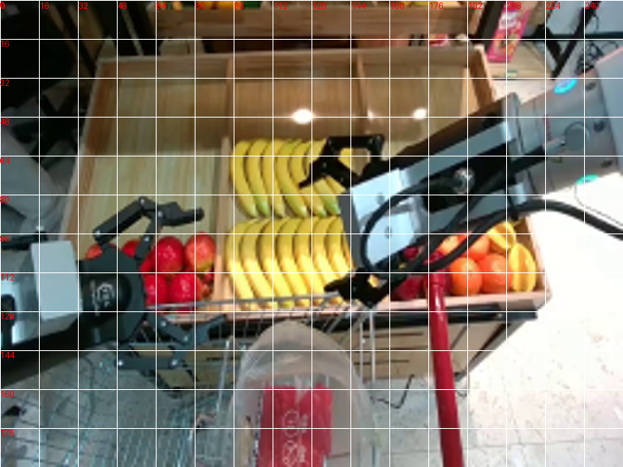
视觉工具实际返回图片 3
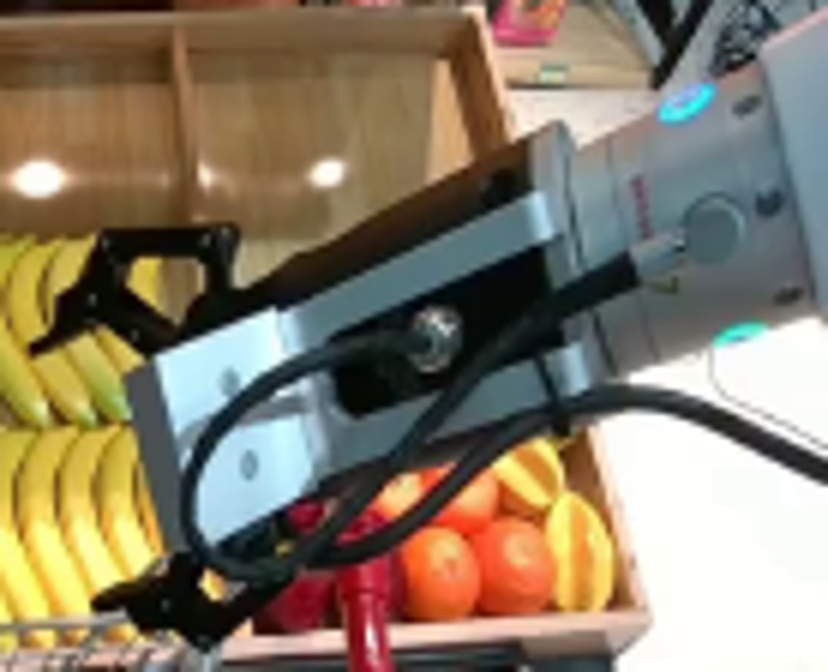
视觉工具实际返回图片 4

视觉工具实际返回图片 5
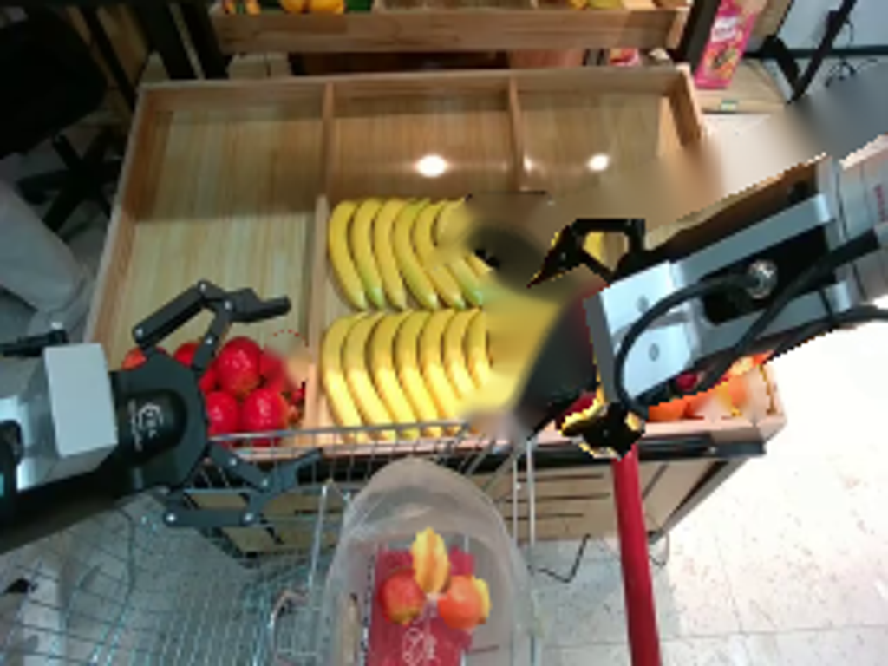
视觉工具实际返回图片 6
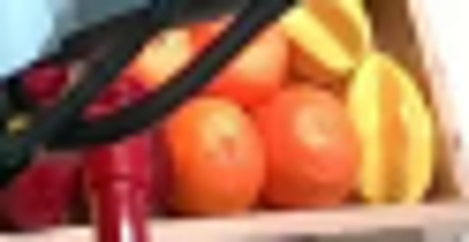
视觉工具实际返回图片 7
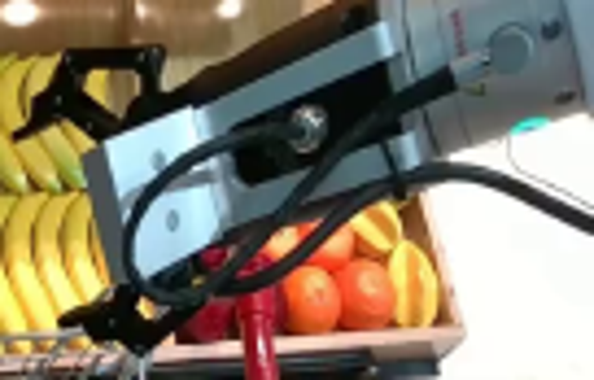
视觉工具实际返回图片 8
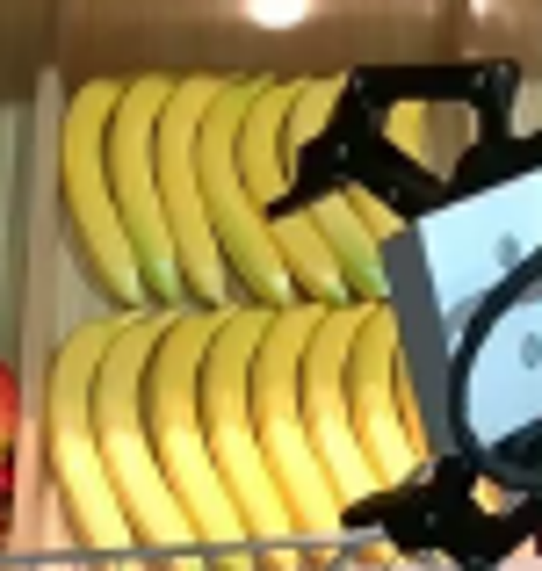
视觉工具实际返回图片 9

视觉工具实际返回图片 10
视觉工具实际返回图片 11
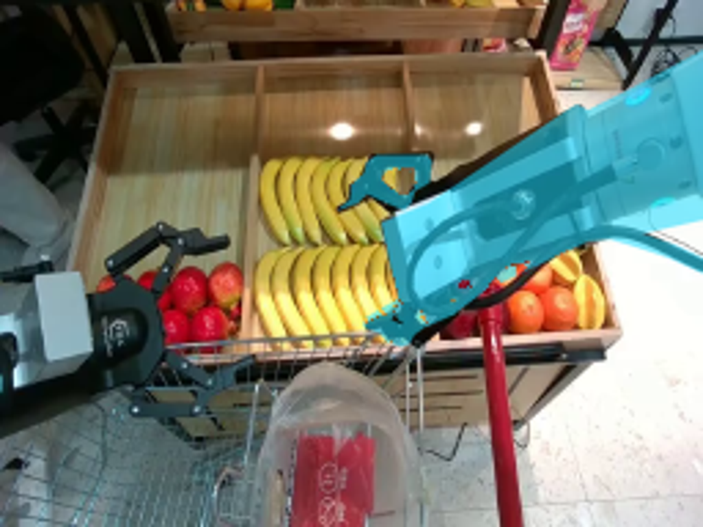
视觉工具实际返回图片 12
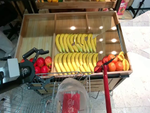
视觉工具实际返回图片 13
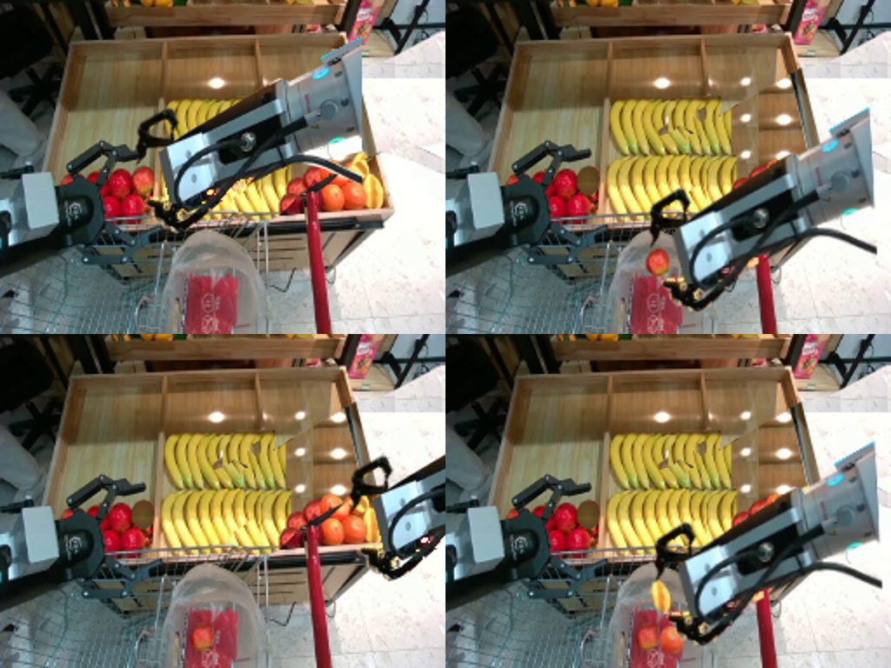
视觉工具实际返回图片 14
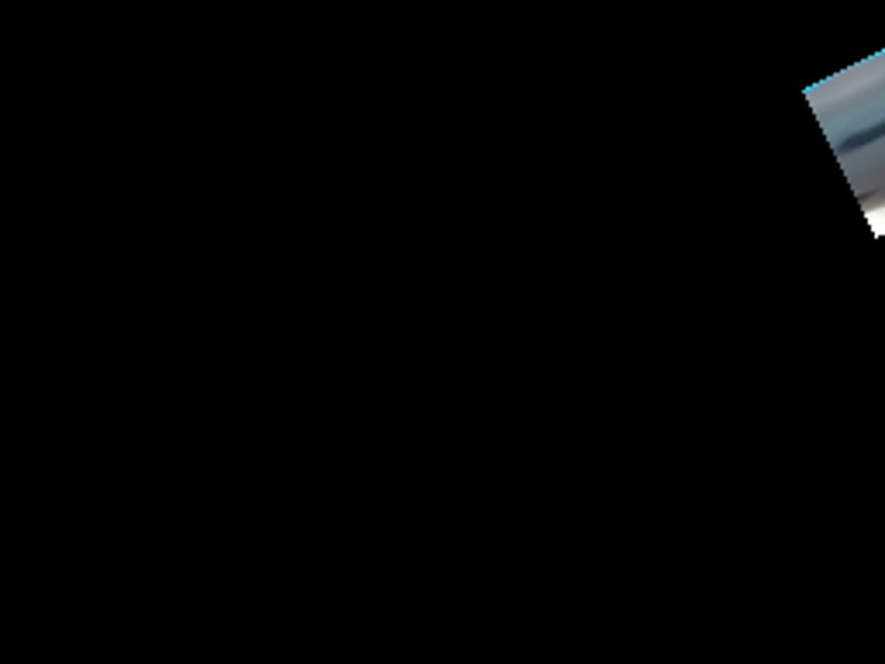
视觉工具实际返回图片 15

保存候选 6 份；完成命令 17 次；可验证图片返回 15 张。原始 API 响应与完整日志保留在本地。